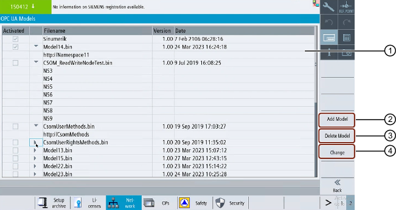

Press the "Model" softkey to get the below screen and perform the following operations.
① | The OPC UA model dialog shows the activated CSOMs and also displays the following information:
|
② | You can add one or multiple new CSOM(s) |
③ | You can delete a CSOM |
④ | You can change one or multiple CSOM(s): status can be activated/deactivated |
OPC UA Models